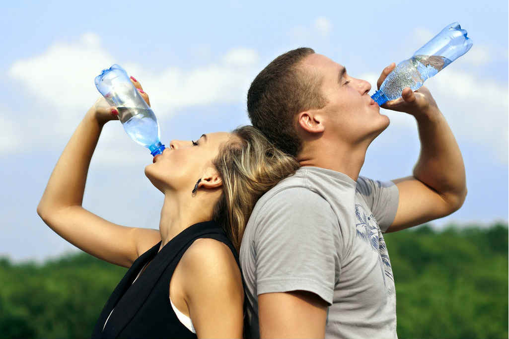
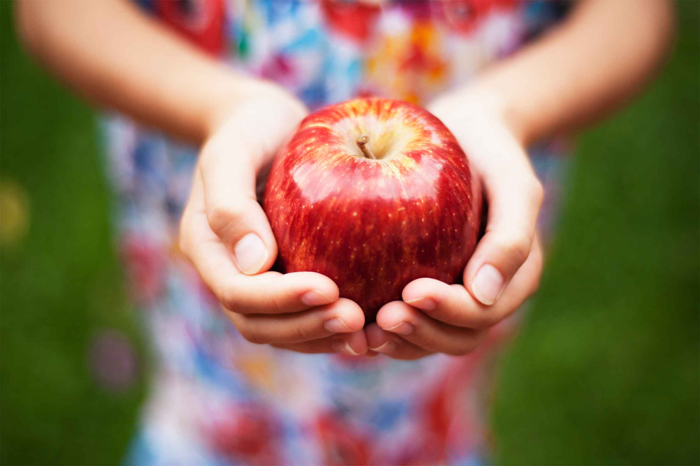
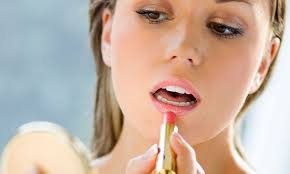
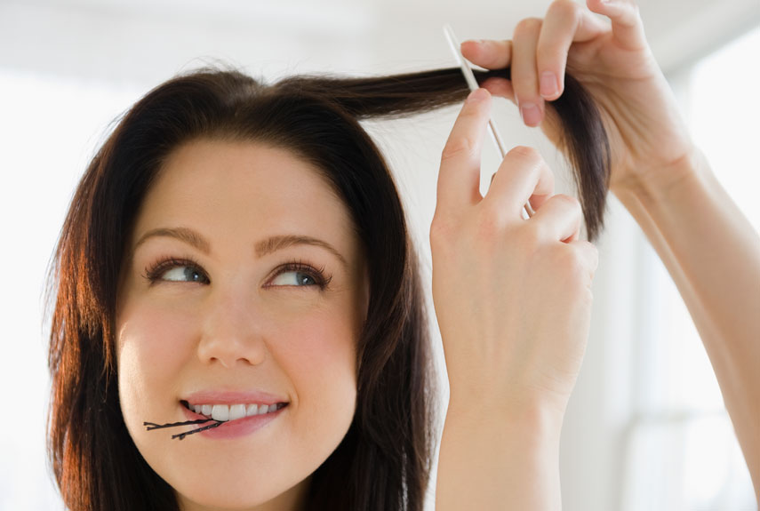
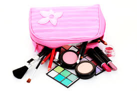

Dhyara
Because You're Worth It!

How to keep your skin beautiful and glowing while travelling
Well, if you are someone who often go out on business trips or on vacations with friends and family, then these beauty hacks are surely going to be of great help to you. Travelling is always fun as it gives you a chance to explore new places, to meet new people or to do things that you have never done before. In fact travelling can instantly rejuvenate your mind and soul. But apart from all the fun and excitement, travelling also make us exhausted too, which makes you look tired and gloomy. Constant travelling also affects the health of your skin, especially if you travel for a week or so every year.
So to look your best while travelling and to keep your skin younger and healthy looking, below we are listing some of the easy to do beauty hacks which you should definitely keep in mind next time you travel to your favorite destination:

Keep your skin hydrated
This is one of the most important beauty hacks that all big celebrities and actors follow to keep their skin healthy and glowing. Yes, to keep your skin hydrated is really important not just for skin health but for your overall health. To ensure that your skin is hydrated when you travel, drink at least 8-10 glass of water every day and don’t forget to carry a water bottle with you. You can even go for juices and foods like orange, cucumber, watermelon and many more.Moisturize your skin
No matter what your skin type is, moisturizing your skin is of utmost importance. When we travel, our skin gets exposed to dirt and many harmful substances present in the atmosphere. So make sure that you keep your skin clean and moisturize it frequently while travelling.

Eat Healthy
To keep your body healthy during travelling should be your top priority. Always try to intake healthy foods and drinks as much as you can. In fact, in place of processed food and snacks, go for dry nuts, juices and fruits. You can even carry some healthy snacks with you on your trip. Also drink green juices or fresh juices to keep your body hydrated and toxins free. This will surely help you to keep your skin glowing which will help you to look great in pictures too.Shield your skin from the Sun
The moment you head out from the house, your skin gets exposed to harmful UV radiation that damage your skin not only from outside but from inside as well. These UV rays can cause skin to burn, wrinkles, blemishes, dark circles under eyes and affect your skin health in numerous ways. To protect your skin from all these damages, make sure you use sun block before going out. You can also take help of hats and scarf to protect your skin and hair from UV damage.

Use a Lip Hydrator
Lip Hydrators or Lip Balms are really must to carry in your bag. Our lips are very sensitive and they easily get dry and chapped if ignored. So to avoid that situation, don’t forget to nourish your lips time to time by applying a lip balm or Hydrator.

Don’t ignore your hair
Apart from skin what you need to pay attention to is your hair. So to avoid the tangling and breakage during travelling, make sure that you don’t keep them loose all the time. Make a loose bun or twisted braid which looks both trendy and stylish and protect your hair from damage.

Must carry items in your bag
There are few things that you should definitely need to carry while going out on a trip that includes your hair accessories, Bobby pins and hair clips to help you tying up your hair. Sunscreens, cleanser, moisturizer is another must have things for you. Also remember to carry some antibacterial soaps and wipes to ensure that your skin is bacteria free.So next time you plan your trip, make sure that you follow all these beauty hacks to look great without damaging your skin and hair while travelling.